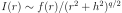
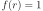
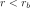
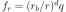
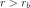
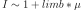

4.1.36. Spei: relativistic line broadening model¶
This multiplicative model broadens an arbitrary additive component with a relativistic line profile. The relativistic line profile is based on the theory of transfer functions as presented by Cunningham (1975) and worked out in a fortran code by Ronald Speith.
The original code by Speith has four important issues.
First, the computation of all transfer function values needed for a full integration over a disk is computational expensive. Therefore we have pre-calculated the transfer function for a grid of black hole spin a and inclination i values, and also the minimum and maximum redshift for each combination of spin and inclination. For an arbitrary set of parameters (like inner and outer radius, emissivity profile etc.) we first compute the model for a few grid values of spin and inclination close to the desired spin and inclination, and interpolate the spectra on those grid points.
Secondly, at large radii the Speith algorithm gets enhanced numerical noise. We have circumvented this by testing automatically on irregularities for each grid transfer function, and replacing the irregular points by an extrapolation from smaller radii.
Third, the original algorithm is not applicable beyond 400 gravitational radii. We have corrected this by adding to our grid transfer functions the Newtonian limit as given in Cunningham’s paper.
Finally, the Speith model has a double integration over radius and redshift. The user chooses an observed photon energy, from which the emitted photon energy is computed; then the transfer function for that emitted energy combined with the emissivity for that emitted energy are used in the double integration. This works well for emissivity laws that are smooth as a function of energy, but not for convolution kernels where the emissivity is typically a delta-function in energy. We have rewritten the equations by substituting such a delta-function, thereby effectively removing one integration. Details of all this can be found in an internal SPEX memo.
The model is rather flexible and fast. The parameters are described in more detail below, but they can be grouped into four categories:
Geometry of the disk and black hole: black hole spin and inclination, inner and outer radius.
2. Emissivity law which is given by , where  for  and  for . With this choice, we combine the emissivity laws of Laor (1991) for the first part, with that of Fabian et al. (2002) for the second part.
Angular dependence emissivity
A performance speed parameter.
Warning
It should be noted that we compute the model only for radii larger than the innermost stable circular orbit.
Warning
Of course, any line or continuum emission component can be convolved with the this broadening model; for continuum components the computational time may be very large, however, due to the convolution involved.
Warning
It is advised not to have both h as a free parameter and to vary the pair r_b, dq. Both can be used to describe a break in the emissivity law, but having both free may lead to undesired correlations in the fitting process.
The parameters of the model are:
r1 : Inner radius of the disk, in units of GM/c^2. The minimum allowed value is 1.234 (for a maximally rotating Kerr black
hole). For a Schwarzschild black hole, one should take r_i = 6. Default value: 1.234.r2 : Outer radius of the disk, in units of GM/c^2. Default value 400. Take care that r2>r1.a : black hole spin. Default value 0 (Schwarzchild case), maximum value 0.9982 (maximally rotating Kerr black hole).i : Inclination angle (in degrees) of the disk (angle between line of sight and the rotation axis of the disk).
Default value: 45 degrees.q : Emissivity slope q as described above. Default value: 2.h : Emissivity scale height. Default value: 0.dq: Emissivity break index. Default value: 0 (no break)rb: Emissivity break radius. Default value: 10^20.limb: limb brightening law  where  is the cosine of the emission angle.
Default value: 2.06 following Laor (1991).
is the cosine of the emission angle.
Default value: 2.06 following Laor (1991).dres: resolution of the profile. Computation time is inverse proportional to this number. Recommended value is
0.01 for CCD-type resolution, and 0.001 for high-resolution X-ray spectra. Default value: 0.001.The following parameters are not free parameters, but output parameters of the model.
s: Integrated flux of the line before renormalising to 1.gmin: minimum redshift, occurs at the innermost radius r1.gmax: maximum redshift, occurs at some intermediate radius.gint: maximum redshift at the innermost radius r1.g1: minimum redshift at the outermost radius r2.g2: maximum redshift at the outermost radius r2.rms: radius of the innermost stable circular orbit in units of GM/c^2.Recommended citation: Speith et al. (1995).